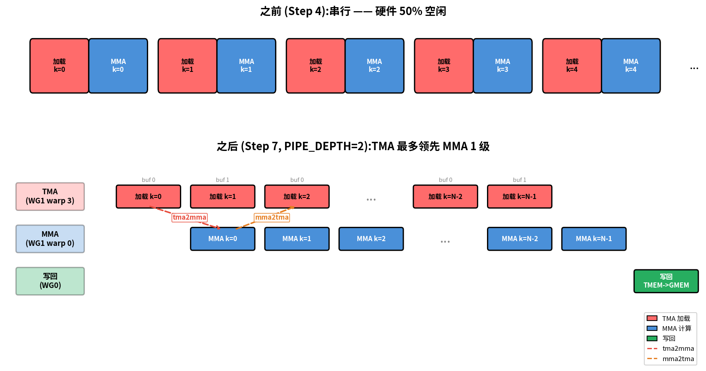
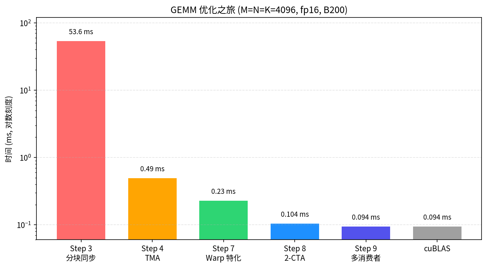

Scaling GEMM with Warp Specialization and Clusters#
Overview
The pipelined GEMM still has one warpgroup doing load, MMA, and writeback in sequence, the bottleneck this chapter removes.
Step 7 specializes warps into roles, Step 8 adds a 2-CTA cluster, Step 9 adds multiple consumers.
Each step removes a serial bottleneck, ending near state-of-the-art throughput.
The pipelined GEMM from the previous chapter (Pipelining GEMM with TMA) is fast, but it still asks one warpgroup to do everything: issue the load, run the MMA, then write the result back. Even with a software pipeline, that one team of threads becomes the place where all three engines meet.
The symptom is easy to see. The TMA unit goes quiet while the Tensor Cores run, the Tensor Cores go quiet while the result drains to memory, and each engine waits on the others through one set of threads. The way past this is to stop making one team do everything.
We pursue that idea in three steps of widening cooperation. Step 7 (Step 7: Warp Specialization + Pipeline) specializes warps into producer, consumer, and writeback roles. Step 8 (Step 8: 2-CTA Cluster) joins two CTAs into a cluster that shares operands across their shared memory. Step 9 (Step 9: Multi-Consumer Warp Specialization) adds a second MMA consumer so one staged tile feeds twice the math.
It helps to see the three steps as one pattern at different scales. Step 7 keeps the full pipeline inside one CTA: TMA and MMA share one warpgroup, while writeback runs in another. Step 8 widens cooperation across CTAs, producing a 256×256 tile that spans both of them. Step 9 pushes the compute density further still: the cluster output grows to 512×256, each staged B tile is reused by both consumers, and we arrive at the densest variant in the tutorial.
One thing stays constant through all of this. The SMEM, TMEM, and register layouts still honor the contracts we built in the previous two chapters; what changes is who cooperates, not how data is laid out. Step 8 is the first time the cooperating scope widens past a single CTA, so its operand tiles are split across two CTAs’ shared memory and one layout spans both CTAs along the cbx cluster axis.
Step 7: Warp Specialization + Pipeline#
The single-warpgroup kernel leaves performance on the table for a simple reason: every thread walks the same path, load, then compute, then write, and so while it is loading, the Tensor Cores have nothing to do, and while it is computing, the TMA engine has nothing to do. The fix is warp specialization. Instead of asking one team of threads to do every job in turn, we hand each job to a dedicated warp and let those warps run at the same time, stitched together by a software pipeline. This is the biggest architectural change in the GEMM path, and the rest of the chapter builds on top of it. The benchmarks here use M=N=K=4096.
What this step changes: Scope
Scope: one warpgroup walking load → MMA → writeback in order becomes three concurrent roles (TMA producer, MMA consumer, writeback) connected by full/empty barriers.
Layout: unchanged, same SMEM stages and TMEM accumulator as Step 6.
Dispatch: unchanged, TMA loads,
tcgen05MMA.
Topics.
Warp specialization: dedicating different warps/warpgroups to different tasks
High-level barrier abstractions:
TMABar,TCGen05Bar,MBarrierPipelineStatefor automatic stage/phase managementwarpgroup_syncbarrier IDs for per-warpgroup synchronization
(The multi-stage SMEM pipeline and the persistent ClusterPersistentScheduler2D are reused unchanged from Steps 5–6; only the scope split is new here.)
From Sequential to Concurrent#
Before introducing the roles and barriers, it helps to isolate the scheduling bottleneck that warp specialization removes. The figure below uses a Step-4-style sequential timeline as a compact reference for the pre-specialization kernels in Steps 4-6, then puts it above the Step 7 warp-specialized schedule so the difference in engine utilization is visible at a glance.

On top is the pre-specialization single-warpgroup pattern: the same unspecialized thread group owns both the load path and the MMA path, so one engine can easily go idle while the other is active. Steps 5 and 6 improve that baseline with double buffering and persistent scheduling, but they do not yet split loading and compute into independent producer and consumer roles. On the bottom, specialization breaks that turn-taking. The TMA producer prefetches the next tile while the MMA consumer is busy computing, and writeback proceeds on its own. Producer warp 3 issues the next load while consumer warp 0 is still working through the current MMA, so neither engine has to wait on the other. The load/MMA handoff uses two barriers:
tma2mma(TMA → MMA): signals that the loaded SMEM data is ready for MMA to consume.mma2tma(MMA → TMA): signals that MMA has finished reading a buffer, so TMA can reuse it for the next load.
One detail in the figure can look like a mistake at first: the mma2tma arrows skip ahead by a stage. The reason is the ring buffer. With PIPE_DEPTH=2 there are two SMEM buffers, stage 0 and stage 1; TMA Load k=0 fills buffer 0, and TMA Load k=1 fills buffer 1. When MMA Compute k=0 finishes reading buffer 0, it signals mma2tma to say the buffer is free, but the load that actually wants buffer 0 back is TMA Load k=2, not k=1 (which is using buffer 1). That is why the mma2tma arrow from MMA Compute k=0 reaches all the way to TMA Load k=2. The release jumps a stage simply because the ring has two slots.
Warp Roles#
The timeline showed why we split the work; the next question is who does each part. Specialization assigns the three jobs (load, compute, writeback) to specific warps so they can run at once. With WG_NUMBER=2, the kernel uses two warpgroups (abbreviated WG in the role table):
Actor |
Location |
Job |
|---|---|---|
TMA Producer |
Warpgroup 1, warp 3 |
Continuously loads A and B tiles via TMA |
MMA Consumer |
Warpgroup 1, warp 0 |
Runs MMA as soon as data is ready |
Writeback |
Warpgroup 0 (all warps) |
Reads TMEM results, writes to GMEM |
4 Barriers#
Three concurrent actors need four barriers, and the four sort neatly into two opposite directions. The forward path (TMA → MMA → Writeback) signals data readiness; its message is “the tile you were waiting for is here.” The backward path (Writeback → MMA → TMA) signals buffer release: “the slot you wanted is free again.” Once you know the naming convention the names read themselves: each is source2destination, so tma2mma is simply the barrier on which TMA signals MMA.
Barrier |
Type |
Direction |
Meaning |
|---|---|---|---|
tma2mma |
|
TMA -> MMA |
“SMEM data is ready” |
mma2tma |
|
MMA -> TMA |
“SMEM buffer can be reused” |
mma2ld |
|
MMA -> Writeback |
“TMEM results are ready” |
ld2mma |
|
Writeback -> MMA |
“TMEM is free for next tile” |
Why does each barrier have the type it does? The type follows from how the producer announces that it is done. TMA Loads use TMABar, an mbarrier with byte counting: the TMA hardware itself arrives on the barrier once the transfer’s bytes have landed, so the consumer learns the data is ready without any thread having to poll. TMA Stores cannot use this (a store has nobody to notify), so they fall back to cp_async.bulk.commit_group() + wait_group(0), where the issuing thread simply waits for its own write to drain. MMA operations use TCGen05Bar, on which the tcgen05.commit() instruction signals the barrier when the MMA finishes.
One small detail here will pay off in Step 8. The arrive calls pass cta_mask=0, because in a single-CTA kernel there is no other CTA to signal. When Step 8 forms a cluster, this very argument turns nonzero and becomes the mechanism for waking the cooperating CTAs.
PipelineState#
The four barriers tell the roles when a buffer is ready; something still has to track which buffer each role is on as the pipeline cycles. That bookkeeping is what PipelineState manages. A ring buffer carries two pieces of bookkeeping at once: which slot we are currently on, and which “phase” of that slot’s barrier we are waiting for. Tracking both by hand across a pipelined loop is exactly the kind of thing that breeds off-by-one errors, and an off-by-one here deadlocks the whole kernel. PipelineState exists to keep the two together so you do not have to:
tma_ps = PipelineState(PIPE_DEPTH, phase=1) # Producer starts ready (phase=1)
# tma_ps.stage = current stage index
# tma_ps.phase = current phase (0 or 1)
tma_ps.advance() # Advance to next stage
The initial phase is what decides whether a role’s very first wait lets it run or makes it block, and the right answer is opposite at the two ends of the pipe, which is the part that trips people up:
phase=1(producer) -> the firstwait(phase=1)sees the barrier still at phase 0, and since 0 != 1 it passes immediately. That is exactly what we want, because the buffers start empty and the producer should be free to start filling them right away.phase=0(consumer) -> the firstwait(phase=0)sees the barrier at phase 0, and since 0 == 0 it blocks. Again what we want, because there is no data yet and the consumer has nothing to read until the producer arrives.
Give both ends the same starting phase and you get a deadlock or, worse, silent corruption, so this one choice is worth getting right.
warpgroup_sync Barrier IDs#
Specialization introduces a synchronization hazard that is easy to walk into. Once each warpgroup runs a different code path, the familiar cta_sync() will deadlock: it uses hardware barrier #0 and insists that every CTA thread arrive, yet inside a warpgroup branch only some of those threads are present. What we need instead is a barrier scoped to a single warpgroup. The GPU gives us 16 named barriers (IDs 0–15), so the kernels reach for warpgroup_sync(10), which synchronizes only the threads within one warpgroup. When several warpgroups each need to sync on their own, as happens in the multi-consumer Step 9, they take distinct IDs via warpgroup_sync(wg_id + 10) so that they never collide on the same hardware barrier.
Implementation.
We use PIPE_DEPTH=2 here, the smallest depth that still lets load and compute overlap at all. Going deeper hides more memory latency, up to the limit of the SMEM budget; the When Step 7 misbehaves discussion below works through that trade-off in detail. With all the pieces now in hand (the roles, the four barriers, PipelineState, and warpgroup-scoped sync), we can put together the full kernel:
import tvm
from tvm.script import tirx as T
from tvm.script.tirx import tile as Tx
from tvm.tirx.layout import TileLayout, S, TLane, TCol, tid_in_wg
from tvm.tirx.cuda.operator.tile_primitive.tma_utils import tma_shared_layout, SwizzleMode
from tvm.tirx.lang.pipeline import TMABar, TCGen05Bar, MBarrier, PipelineState
from tvm.tirx.lang.tile_scheduler import ClusterPersistentScheduler2D
SM_COUNT = 148 # Number of SMs on NVIDIA B200 GPU
F16_SIZE = 2
def hgemm_v7(M, N, K):
a_type = tvm.DataType("float16")
b_type = tvm.DataType("float16")
d_type = tvm.DataType("float16")
acc_type = tvm.DataType("float32")
BLK_M, BLK_N, BLK_K = 128, 128, 64
K_TILES = K // BLK_K
PIPE_DEPTH = 2
WG_NUMBER = 2
A_layout = tma_shared_layout(a_type, SwizzleMode.SWIZZLE_128B_ATOM, (PIPE_DEPTH, BLK_M, BLK_K))
B_layout = tma_shared_layout(b_type, SwizzleMode.SWIZZLE_128B_ATOM, (PIPE_DEPTH, BLK_N, BLK_K))
D_layout = tma_shared_layout(d_type, SwizzleMode.SWIZZLE_128B_ATOM, (BLK_M, BLK_N))
@T.prim_func
def kernel(
A: T.Buffer((M, K), a_type),
B: T.Buffer((N, K), b_type),
D: T.Buffer((M, N), d_type),
):
T.device_entry()
bx = T.cta_id([SM_COUNT])
wg_id = T.warpgroup_id([WG_NUMBER])
warp_id = T.warp_id_in_wg([4])
lane_id = T.lane_id([32])
# --- Allocation ---
pool = T.SMEMPool()
tmem_addr = pool.alloc((1,), "uint32")
tma2mma = TMABar(pool, PIPE_DEPTH)
mma2tma = TCGen05Bar(pool, PIPE_DEPTH)
mma2ld = TCGen05Bar(pool, 1)
ld2mma = MBarrier(pool, 1)
pool.move_base_to(1024)
Asmem = pool.alloc((PIPE_DEPTH, BLK_M, BLK_K), a_type, layout=A_layout)
Bsmem = pool.alloc((PIPE_DEPTH, BLK_N, BLK_K), b_type, layout=B_layout)
Dsmem = pool.alloc((BLK_M, BLK_N), d_type, layout=D_layout)
# --- Barrier init ---
tma2mma.init(1)
mma2tma.init(1)
mma2ld.init(1)
ld2mma.init(128) # all 128 Warpgroup 0 threads arrive
pool.commit()
# --- TMEM alloc + fence ---
if wg_id == 0:
if warp_id == 0:
T.ptx.tcgen05.alloc(T.address_of(tmem_addr), n_cols=512, cta_group=1)
T.ptx.fence.proxy_async("shared::cta")
T.ptx.fence.mbarrier_init()
T.cuda.cta_sync()
tmem = T.decl_buffer(
(128, 512), acc_type, scope="tmem", allocated_addr=tmem_addr[0],
layout=TileLayout(S[(128, 512) : (1@TLane, 1@TCol)]))
# --- Tile scheduler ---
tile_scheduler = ClusterPersistentScheduler2D(
"ts", num_m_tiles=M // BLK_M, num_n_tiles=N // BLK_N,
l2_group_size=8, num_clusters=SM_COUNT)
tile_scheduler.init(bx)
m_st = T.meta_var(tile_scheduler.m_idx * BLK_M)
n_st = T.meta_var(tile_scheduler.n_idx * BLK_N)
# =============================================
# Warpgroup 1: TMA Producer (warp 3) + MMA Consumer (warp 0)
# =============================================
if wg_id == 1:
if warp_id == 3:
# === TMA Producer ===
tma_ps = PipelineState(PIPE_DEPTH, phase=1)
@T.inline
def tma_load(k_offset):
Tx.copy_async(Asmem[tma_ps.stage, :, :],
A[m_st:m_st+BLK_M, k_offset:k_offset+BLK_K],
dispatch="tma", cta_group=1,
mbar=tma2mma.ptr_to([tma_ps.stage]))
Tx.copy_async(Bsmem[tma_ps.stage, :, :],
B[n_st:n_st+BLK_N, k_offset:k_offset+BLK_K],
dispatch="tma", cta_group=1,
mbar=tma2mma.ptr_to([tma_ps.stage]))
if T.filter(lane_id, T.ptx.elect_sync()):
while tile_scheduler.valid():
for k in range(K_TILES):
mma2tma.wait(tma_ps.stage, tma_ps.phase)
tma_load(k * BLK_K)
tma2mma.arrive(tma_ps.stage,
(BLK_M * BLK_K + BLK_N * BLK_K) * F16_SIZE)
tma_ps.advance()
tile_scheduler.next_tile()
elif warp_id == 0:
# === MMA Consumer ===
mma_ps = PipelineState(PIPE_DEPTH, phase=0)
ld_ps = PipelineState(1, phase=1)
if T.filter(lane_id, T.ptx.elect_sync()):
while tile_scheduler.valid():
# Wait for TMEM to be free from previous tile's writeback
ld2mma.wait(ld_ps.stage, ld_ps.phase)
ld_ps.advance()
for k in range(K_TILES):
tma2mma.wait(mma_ps.stage, mma_ps.phase)
Tx.gemm_async(
tmem[:, :BLK_N],
Asmem[mma_ps.stage, :, :],
Bsmem[mma_ps.stage, :, :],
accum=(k != 0), dispatch="tcgen05", cta_group=1)
mma2tma.arrive(mma_ps.stage, cta_group=1, cta_mask=0)
mma_ps.advance()
# Signal results ready for writeback
mma2ld.arrive(0, cta_group=1, cta_mask=0)
tile_scheduler.next_tile()
# =============================================
# Warpgroup 0: Writeback
# =============================================
elif wg_id == 0:
wb_ps = PipelineState(1, phase=0)
reg_f16 = T.alloc_local((BLK_N,), d_type)
while tile_scheduler.valid():
# Wait for MMA results
mma2ld.wait(wb_ps.stage, wb_ps.phase)
wb_ps.advance()
# Read TMEM -> registers (warpgroup scope)
reg = T.alloc_local((BLK_N,), acc_type)
reg_wg = reg.view(128, BLK_N,
layout=TileLayout(S[(128, BLK_N) : (1@tid_in_wg, 1)]))
Tx.wg.copy_async(reg_wg[:], tmem[:, :BLK_N])
T.ptx.tcgen05.wait.ld()
# Signal TMEM free (all 128 threads arrive)
ld2mma.arrive(0, cta_id=0, pred=True)
# Cast fp32 -> fp16
Tx.cast(reg_f16[:], reg[:])
# Write to Dsmem + TMA store
Tx.copy(Dsmem[warp_id * 32 + lane_id, :], reg_f16[:])
T.ptx.fence.proxy_async("shared::cta")
T.cuda.warpgroup_sync(10)
if warp_id == 0:
if lane_id == 0:
Tx.copy_async(D[m_st:m_st+BLK_M, n_st:n_st+BLK_N],
Dsmem[:, :], dispatch="tma")
T.ptx.cp_async.bulk.commit_group()
T.ptx.cp_async.bulk.wait_group(0)
T.cuda.warpgroup_sync(10)
tile_scheduler.next_tile()
# --- Cleanup ---
T.cuda.cta_sync()
if warp_id == 0:
T.ptx.tcgen05.relinquish_alloc_permit(cta_group=1)
T.ptx.tcgen05.dealloc(tmem_addr[0], n_cols=512, cta_group=1)
return kernel
To run any of these kernels, reuse the same compile / run / check harness we showed once in Step 1 (Building a Tiled GEMM): swap hgemm_v1 for hgemm_v7, hgemm_v8, or hgemm_v9, and pick a problem size such as M=N=K=4096. Keep in mind that the clustered steps need M and N to be multiples of their cluster tile (256×256 for Step 8, 512×256 for Step 9), so a tiny 128×128 size produces no tiles at all. Compile one step per fresh Python session, restarting the kernel before you switch steps, because the kernels reuse inner names and the compiler holds per-session state. The per-step timings are collected in End-to-End Result below.
Epilogue (Writeback) Details#
Step 7 can afford a pleasantly simple epilogue. With only BLK_N=128 columns, the writeback warpgroup reads the whole TMEM tile into registers in a single pass and then issues one TMA store. Steps 8 and 9 will not have this luxury, which is precisely why they introduce the chunking we add later, but for now the sequence is:
Wait for MMA:
mma2ld.wait(phase). Steps 8 and 9 in this tutorial add afence.after_thread_sync()here as a conservative extra; the MMA-completion mbarrier already covers the ordering, and most kernels (including CUTLASS) omit it, so Step 7 does too.Read TMEM -> registers (128 fp32 per thread, warpgroup scope via
Tx.copy_async(reg_wg, tmem[:, :BLK_N])followed byT.ptx.tcgen05.wait.ld()).Signal MMA:
ld2mma.arrive(0, cta_id=0, pred=True)(all 128 threads arrive); TMEM is now free for the next tile. The twoarrivekwargs recur in the clustered steps:cta_idnames which CTA’s copy of the barrier to signal (0= this CTA, the local barrier; in Step 8 the cooperative arrives target CTA-0 viacta_maskinstead), andpredis a per-thread predicate gating whether this thread actually arrives (Truehere, so every writeback thread counts toward the arrival total).Cast fp32 -> fp16 in registers.
Write registers -> Dsmem, then
fence.proxy_async("shared::cta") + warpgroup_sync(10)to flush.TMA store Dsmem -> GMEM via
cp_async.bulk.commit_group() + wait_group(0).
Step 8 (with BLK_N=256) and Step 9 (with MMA_N=256 per consumer) cannot keep this one-pass form, and the reason is register pressure. Reading 256 fp32 values per thread means 256 × 4 = 1024 bytes have to live in each thread’s registers at the same time, which risks spilling out to local memory and, on top of that, forces a larger Dsmem buffer. So those steps break the writeback into EPI_N-column chunks (EPI_N=64): each iteration keeps only EPI_N fp32 registers live and issues a correspondingly smaller TMA store, trading a few more store instructions for a register budget that stays comfortable.
Implementation notes.
Persistent kernel:
bx = T.cta_id([SM_COUNT])— one CTA per SM, loops over tilesL2-friendly scheduling:
ClusterPersistentScheduler2Dorders tiles for cache localityThis pattern — warp specialization plus software pipelining — is common in high-performance GEMM kernels, including CUTLASS-style designs.
When Step 7 Misbehaves#
Step 7 is the first GEMM kernel where TMA load, tcgen05 MMA, and writeback are all in flight at once. The same failure patterns come back in Steps 8 and 9: mismatched barrier counts, role guards in the wrong place, missing fences, or a staging buffer reused before the TMA store has drained. The debugging checklist for these cases is collected in Debugging Warp-Specialized Kernels.
Pipeline depth tuning. The Step 7 kernel runs at PIPE_DEPTH=2, the minimum. Pushing it to 4 or 6 lets the TMA producer race further ahead of the MMA consumer and hide more memory latency, but it does so by spending more SMEM, and SMEM is finite. The B200 offers 228 KB per SM (see Numbers to Keep in Mind in GPU Execution Model). With BLK_M=BLK_N=128, BLK_K=64, fp16, each pipeline stage costs (128*64 + 128*64) * 2 = 32 KB for A and B together, and the Dsmem writeback staging buffer adds another 32 KB on top. That puts PIPE_DEPTH=4 at roughly 160 KB and PIPE_DEPTH=6 at roughly 224 KB, right up against the budget. To go any deeper than that, you would have to rethink the writeback staging strategy.
Warp specialization got the threads of one CTA cooperating. The next step widens that cooperation across the boundary of the CTA itself, putting two of them to work on a single larger tile.
Step 8: 2-CTA Cluster#
Step 7 got the engines overlapping, but each CTA was still off computing its own 128×128 tile in isolation, reloading operands that no neighbor could borrow. Step 8 breaks that isolation. Two CTAs join into a cluster and gain the ability to reach into each other’s shared memory, so a single cooperative tcgen05 MMA produces one 256×256 tile that spans both of them, and one load of B now feeds twice as much MMA work. As before, M=N=K=4096.
What this step changes: Scope + Layout + Dispatch
Scope: the cooperating scope now spans two CTAs in a cluster, not one.
Layout: operand tiles are split across the two CTAs’ SMEM; CTA 0 owns the shared completion barrier (
remote_view).Dispatch: the MMA gains
cta_group/cta_masksotcgen05runs as a 2-CTA cooperative op.
Topics.
CTA clusters: multiple CTAs cooperating on a larger tile
Cross-CTA SMEM access via
map_shared_rankcta_group=2for cooperative MMA over a 256x256 cluster tileCross-CTA barrier signaling with
cta_mask
Cluster Tile Shape#
The whole optimization rests on a single hardware capability: with cta_group=2, the MMA is allowed to read operand tiles staged by both CTAs, not just the one it lives on. Each CTA loads one 128-row slice of stored B, which, after the transpose, becomes 128 logical output columns, and the cooperative MMA stitches the two slices back together into one operand. The figure below traces how the two CTAs’ A and B slices combine into the single 256×256 cluster tile:
Interactive: each CTA owns one A row slice and one stored-B row slice, then reads the other CTA’s stored-B slice across the cluster (DSMEM). After B.T, the two stored-B slices cover the full output-column span, so the pair produces one 256×256 output tile.
Why A and B are split across the cluster: To see how the 256×256 tile gets partitioned, recall that the tutorial stores GEMM as D = A @ B.T, where stored B has shape N x K. With two CTAs in a cluster, the split falls out cleanly:
A is split vertically: CTA-0 holds A0 (rows 0-127), CTA-1 holds A1 (rows 128-255). Stacked:
[A0; A1](256 rows).Stored B is split by rows: CTA-0 loads B rows 0-127, CTA-1 loads B rows 128-255. Because the math uses
B.T, those two stored row slices become two 128-column slices of the logical right-hand operand.With
cta_group=2, the MMA hardware reads B from both CTAs’ SMEM via cross-CTA shared memory access, so it sees the full logical output-column span.Result: the two CTAs cooperate on one 256x256 output tile. Each CTA writes a 128x256 row stripe of that tile.
It is worth pausing to see why this is a real win and not just a reshuffle of work. Each CTA still loads only 128×K of A and 128×K of B, so the cluster as a whole stages about 2× a single CTA’s operands, and yet it produces a 256×256 tile, which carries about 4× the output FLOPs of a 128×128 tile. The MMA therefore does roughly twice the work per staged-operand byte, because each CTA’s B slice is reused against the other CTA’s A slice through the cooperative MMA. In other words, arithmetic intensity roughly doubles, and that is exactly the lever a still memory-leaning kernel needs: the ~2.2× speedup in the End-to-End table comes from feeding the same bytes to more math.
Tile Address Calculation#
Now that the cluster is the unit of work, the tile scheduler has to count in cluster tiles too. Each (m_idx, n_idx) it hands back names a full 256×256 region, and the two CTAs inside the cluster split that region between them. Translating a cluster coordinate into the per-CTA slice that each one actually loads looks like this:
m_st = (m_idx * CTA_GROUP + cbx) * BLK_M
n_st = (n_idx * CTA_GROUP + cbx) * BLK_N
Both CTAs work on the same 256×256 cluster tile, and the single coordinate cbx (the CTA’s position within the cluster, either 0 or 1) is what picks out this CTA’s contribution along both axes. m_st selects the output row stripe this CTA owns, n_st selects the stored-B slice it feeds into the cooperative MMA, and the writeback later emits both 128-column halves of the 256-column output span. Note as well that num_m_tiles = M // 256 and num_n_tiles = N // 256 count cluster tiles, not individual CTA tiles.
At a glance cbx appears in both m_st and n_st, as though a row offset had somehow leaked into the column, but both uses are correct, and it is worth untangling why. On the writeback path, cbx belongs to the M axis alone: each CTA owns a distinct 128-row stripe (m_st = (m_idx * CTA_GROUP + cbx) * BLK_M, so CTA-0 writes rows m_idx*256 .. +128 and CTA-1 the next 128), and yet both CTAs write the full 256 output columns of the cluster tile. That is exactly why the store derives its column from the cluster’s n_idx (n_st_epi = n_idx * 256 + no * 128, with no cbx in sight) rather than from the per-CTA n_st. The reason n_st carries cbx at all is that each CTA loads a different stored-B row slice into the MMA: there, cbx is a load offset, not the CTA’s output-column offset.
Code Changes from Step 7#
The diff against Step 7 has six edits, each one encoding a single piece of the cluster contract we just described:
# 1. Cluster launch
cbx, cby = T.cta_id_in_cluster([CTA_GROUP, 1]) # cbx = CTA index within cluster (0 or 1)
# 2. Cooperative MMA (was cta_group=1)
Tx.gemm_async(..., cta_group=2)
# 3. Cross-CTA shared memory access
B_remote = T.ptx.map_shared_rank(Bsmem, cta_id=1)
# 4. Cross-CTA barrier
tma2mma_cta0 = T.decl_buffer(
[CTA_GROUP], "uint64",
data=T.ptx.map_shared_rank(tma2mma.ptr_to([0]), 0),
scope="shared"
)
# 5. mma2tma / mma2ld arrives go from cta_mask=0 (single CTA, Step 7)
# to cta_mask=3 (signal both CTAs in the cluster)
mma2tma.arrive(mma_ps.stage, cta_group=CTA_GROUP, cta_mask=3)
mma2ld.arrive(0, cta_group=CTA_GROUP, cta_mask=3)
# 6. Cluster sync replaces cta_sync at the end
T.cuda.cluster_sync()
Cluster-Scope Changes#
Those six edits all stem from the same shift: the cooperating scope is now the cluster rather than a single CTA. The points below spell out what that widening means in practice: how each CTA finds its place, whose barriers the cluster coordinates on, and which CTA actually issues the cooperative MMA.
Cluster CTA ID:
cbxtells each CTA its position in the cluster (0 or 1). CTA-0 handles A rows 0-127, CTA-1 handles rows 128-255.Remote barrier view: In a cluster, each CTA has its own SMEM and its own barriers, which raises an obvious question: if CTA-1 needs to wait on something CTA-0 produces, whose barrier does it actually touch? The answer is to nominate CTA-0’s barriers as the single coordination point and let any CTA in the cluster reach them.
map_shared_rank(tma2mma.ptr_to([0]), 0)returns a cluster-wide pointer to CTA-0’s barrier, with the TIRx wrappertma2mma.remote_view(0), and from then on every arrive and wait targets CTA-0’s copy.MMA dispatch from CTA-0 only: It is tempting to read
cta_group=2as firing two engines in parallel, but that is not what happens. CTA-0 issues exactly onetcgen05.mma, and the hardware then drives a single cooperative MMA that spans both CTAs, reading operands from both SMs’ SMEM and writing the accumulator across both SMs’ TMEM. CTA-1 issues no MMA at all. (Each SM has only onetcgen05engine, socta_group=2is one cross-SM MMA, not two engines running side by side.) This is why the code guards the MMA withif cbx == 0:.Multicast arrive:
tcgen05.commit(..., cta_group=2, cta_mask=3)is issued only by CTA-0 but signals both CTAs’ barriers.cta_mask=3(binary11) means both CTA-0 and CTA-1 are targeted.ld2mma init count:
init(128 * CTA_GROUP)— both CTAs’ writeback warpgroups (128 threads each) arrive.
Implementation.
def hgemm_v8(M, N, K):
a_type = tvm.DataType("float16")
b_type = tvm.DataType("float16")
d_type = tvm.DataType("float16")
acc_type = tvm.DataType("float32")
CTA_GROUP = 2
BLK_M, BLK_N, BLK_K = 128, 128, 64
MMA_M, MMA_N = 256, 256
K_TILES = K // BLK_K
PIPE_DEPTH = 4
WG_NUMBER = 2
F16_SIZE = 2 # fp16
A_layout = tma_shared_layout(a_type, SwizzleMode.SWIZZLE_128B_ATOM, (PIPE_DEPTH, BLK_M, BLK_K))
B_layout = tma_shared_layout(b_type, SwizzleMode.SWIZZLE_128B_ATOM, (PIPE_DEPTH, BLK_N, BLK_K))
D_layout = tma_shared_layout(d_type, SwizzleMode.SWIZZLE_128B_ATOM, (BLK_M, 128))
@T.prim_func
def kernel(
A: T.Buffer((M, K), a_type),
B: T.Buffer((N, K), b_type),
D: T.Buffer((M, N), d_type),
):
T.device_entry()
bx = T.cta_id([SM_COUNT])
cbx, cby = T.cta_id_in_cluster([CTA_GROUP, 1])
wg_id = T.warpgroup_id([WG_NUMBER])
warp_id = T.warp_id_in_wg([4])
lane_id = T.lane_id([32])
# --- Allocation ---
pool = T.SMEMPool()
tmem_addr = pool.alloc((1,), "uint32")
tma2mma = TMABar(pool, PIPE_DEPTH)
mma2tma = TCGen05Bar(pool, PIPE_DEPTH)
mma2ld = TCGen05Bar(pool, 1)
ld2mma = MBarrier(pool, 1)
pool.move_base_to(1024)
Asmem = pool.alloc((PIPE_DEPTH, BLK_M, BLK_K), a_type, layout=A_layout)
Bsmem = pool.alloc((PIPE_DEPTH, BLK_N, BLK_K), b_type, layout=B_layout)
Dsmem = pool.alloc((BLK_M, 128), d_type, layout=D_layout)
# --- Barrier init ---
tma2mma.init(1)
mma2tma.init(1)
mma2ld.init(1)
ld2mma.init(128 * CTA_GROUP) # both CTAs' writeback threads
pool.commit()
# --- TMEM alloc (cooperative) ---
if wg_id == 0:
if warp_id == 0:
T.ptx.tcgen05.alloc(T.address_of(tmem_addr), n_cols=512, cta_group=CTA_GROUP)
T.ptx.fence.proxy_async("shared::cta")
T.ptx.fence.mbarrier_init()
T.cuda.cta_sync()
tmem = T.decl_buffer(
(128, 512), acc_type, scope="tmem", allocated_addr=tmem_addr[0],
layout=TileLayout(S[(128, 512) : (1@TLane, 1@TCol)]))
# --- Tile scheduler (cluster tiles) ---
tile_scheduler = ClusterPersistentScheduler2D(
"ts", num_m_tiles=M // 256, num_n_tiles=N // 256,
l2_group_size=8, num_clusters=SM_COUNT // CTA_GROUP)
tile_scheduler.init(bx // CTA_GROUP)
m_idx = T.meta_var(tile_scheduler.m_idx)
n_idx = T.meta_var(tile_scheduler.n_idx)
m_st = T.meta_var((m_idx * CTA_GROUP + cbx) * BLK_M)
n_st = T.meta_var((n_idx * CTA_GROUP + cbx) * BLK_N)
# --- Cross-CTA barrier view ---
tma2mma_cta0 = tma2mma.remote_view(0)
# =============================================
# Warpgroup 1: TMA Producer (warp 3) + MMA Consumer (warp 0)
# =============================================
if wg_id == 1:
if warp_id == 3:
tma_ps = PipelineState(PIPE_DEPTH, phase=1)
@T.inline
def tma_load(k_offset):
Tx.copy_async(Asmem[tma_ps.stage, :, :],
A[m_st:m_st+BLK_M, k_offset:k_offset+BLK_K],
dispatch="tma", cta_group=CTA_GROUP,
mbar=tma2mma_cta0.ptr_to([tma_ps.stage]))
Tx.copy_async(Bsmem[tma_ps.stage, :, :],
B[n_st:n_st+BLK_N, k_offset:k_offset+BLK_K],
dispatch="tma", cta_group=CTA_GROUP,
mbar=tma2mma_cta0.ptr_to([tma_ps.stage]))
if T.filter(lane_id, T.ptx.elect_sync()):
while tile_scheduler.valid():
for k in range(K_TILES):
mma2tma.wait(tma_ps.stage, tma_ps.phase)
tma_load(k * BLK_K)
if cbx == 0:
tma2mma_cta0.arrive(tma_ps.stage,
CTA_GROUP * (BLK_M * BLK_K + BLK_N * BLK_K) * F16_SIZE)
tma_ps.advance()
tile_scheduler.next_tile()
elif warp_id == 0:
mma_ps = PipelineState(PIPE_DEPTH, phase=0)
ld_ps = PipelineState(1, phase=1)
if cbx == 0:
if T.filter(lane_id, T.ptx.elect_sync()):
while tile_scheduler.valid():
ld2mma.wait(ld_ps.stage, ld_ps.phase)
ld_ps.advance()
for k in range(K_TILES):
tma2mma.wait(mma_ps.stage, mma_ps.phase)
Tx.gemm_async(
tmem[:, :MMA_N],
Asmem[mma_ps.stage, :, :],
Bsmem[mma_ps.stage, :, :],
accum=(k != 0), dispatch="tcgen05", cta_group=CTA_GROUP)
mma2tma.arrive(mma_ps.stage, cta_group=CTA_GROUP, cta_mask=3)
mma_ps.advance()
mma2ld.arrive(0, cta_group=CTA_GROUP, cta_mask=3)
tile_scheduler.next_tile()
# =============================================
# Warpgroup 0: Writeback (256 columns in 2 x 128-column chunks)
# =============================================
elif wg_id == 0:
wb_ps = PipelineState(1, phase=0)
reg_f16 = T.alloc_local((128,), d_type)
while tile_scheduler.valid():
mma2ld.wait(wb_ps.stage, wb_ps.phase)
wb_ps.advance()
T.ptx.tcgen05.fence.after_thread_sync()
for no in T.unroll(2): # 2 chunks of 128 columns = 256 total
reg = T.alloc_local((128,), acc_type)
reg_wg = reg.view(128, 128,
layout=TileLayout(S[(128, 128) : (1@tid_in_wg, 1)]))
Tx.wg.copy_async(reg_wg[:], tmem[:, no * 128:(no + 1) * 128])
T.ptx.tcgen05.wait.ld()
Tx.cast(reg_f16[:], reg[:])
Tx.copy(Dsmem[warp_id * 32 + lane_id, :], reg_f16[:])
T.ptx.fence.proxy_async("shared::cta")
T.cuda.warpgroup_sync(10)
if warp_id == 0:
if lane_id == 0:
n_st_epi = T.meta_var(n_idx * 256 + no * 128)
Tx.copy_async(D[m_st:m_st+BLK_M, n_st_epi:n_st_epi+128],
Dsmem[:, :], dispatch="tma")
T.ptx.cp_async.bulk.commit_group()
T.ptx.cp_async.bulk.wait_group(0)
T.cuda.warpgroup_sync(10)
ld2mma.arrive(0, cta_id=0, pred=True)
tile_scheduler.next_tile()
# --- Cleanup ---
T.cuda.cluster_sync()
if warp_id == 0:
T.ptx.tcgen05.relinquish_alloc_permit(cta_group=CTA_GROUP)
T.ptx.tcgen05.dealloc(tmem_addr[0], n_cols=512, cta_group=CTA_GROUP)
return kernel
What changes for 2 CTAs.
CTA_GROUP = 2,MMA_N = BLK_N * CTA_GROUP = 256ld2mma.init(128 * CTA_GROUP)— both CTAs’ writeback WGs arriveTMA arrive byte count includes both CTAs:
CTA_GROUP * (BLK_M * BLK_K + BLK_N * BLK_K) * F16_SIZEtcgen05.allocandtcgen05.deallocmust usecta_group=2Writeback splits the 256 output columns into two 128-column chunks — reading all 256 TMEM columns at once exceeds register capacity. Step 9 shrinks the chunk further to
EPI_N=64cluster_sync()replacescta_sync()at the end (ensures all CTAs are done before TMEM dealloc)
All that extra arithmetic intensity shows up directly on the wall clock: Step 8 reaches 0.104 ms at 4096³, about 676× over the 70 ms Step-1 algorithm at the same size (see the End-to-End table). The kernel is now leaning toward compute-bound, and that is precisely what sets up Step 9, where we add a second MMA consumer to keep even more Tensor Core work in flight.
If Step 8 comes out slower than Step 7, the culprit is almost always one of the new cluster contracts entered slightly wrong. Three things are worth checking first: that the TMA arrive byte count is CTA_GROUP * (BLK_M*BLK_K + BLK_N*BLK_K) * F16_SIZE; that the scheduler dimensions are num_m_tiles=M//256, num_n_tiles=N//256 for the 256×256 cluster tile; and that writeback issues two TMA stores, one per 128-column chunk, each of which drains before Dsmem is reused.
Clusters raised reuse across CTAs. The final step turns inward and raises compute density within each CTA, by giving the producer a second MMA consumer to keep fed.
Step 9: Multi-Consumer Warp Specialization#
By Step 8 the MMA is genuinely busy, but a single consumer warp can only chew through a staged B tile so fast, and that B tile is just sitting there in SMEM the whole time, available to anyone who cares to read it. The final optimization takes advantage of that: it adds a second MMA consumer that multiplies a different A block against the same B tile. The compute density per CTA doubles, and the cluster output grows from 256×256 to 512×256. As before, M=N=K=4096.
What this step changes: Scope + Layout
Scope: one MMA consumer becomes two, selected by
warp_id.Layout: one staged B tile is reused by both consumers; A gains a consumer axis.
Dispatch: unchanged.
Topics.
Multiple MMA warps (consumers) for higher throughput
Multiple writeback warpgroups with independent barrier slots
The structure used by the most optimized GEMM variant in this tutorial
Multi-Consumer Structure#
Adding a second consumer means the kernel now has more distinct roles to lay out: two MMA warps instead of one, and a matching second writeback warpgroup to drain the extra accumulator. With NUM_CONSUMER=2 and WG_NUMBER=3, the kernel now spans three warpgroups (abbreviated WG in the role table):
Warpgroup |
Warp |
Role |
|---|---|---|
WG 2 |
warp 0 |
MMA consumer 0: |
WG 2 |
warp 1 |
MMA consumer 1: |
WG 2 |
warp 3 |
TMA producer: loads 2x A blocks + 1x B block per stage |
WG 0 |
all |
Writeback for consumer 0: reads TMEM |
WG 1 |
all |
Writeback for consumer 1: reads TMEM |
The whole arrangement hinges on one asymmetry. Each consumer multiplies its own A block against the same staged B tile, so a single B load now feeds 2× the MMA work, and B’s load cost per useful FLOP is effectively halved. The reason we share B and not A is that the two consumers cover different M-row stripes: their A blocks are genuinely different data, while B is identical for both. Exercise 3 asks you to convince yourself this is the only sharing that works.
Changes from Step 8#
Concretely, supporting the second consumer touches the kernel in a handful of places, and every change traces back to one fact: there are now two A blocks and two TMEM ranges to feed and drain per stage, while B stays shared. The edits below stage an extra A block, give each consumer its own barrier slot, and adjust the tile addressing for the taller 512×256 cluster tile.
Asmem = pool.alloc((PIPE_DEPTH, NUM_CONSUMER, BLK_M, BLK_K), ...)— 2 A blocks per stage, one per consumerTMA loads both
Asmem[stage, 0]andAsmem[stage, 1], with TMA arrive bytes nowCTA_GROUP * (NUM_CONSUMER * BLK_M * BLK_K + BLK_N * BLK_K) * F16_SIZE(extra A block)MMA warp
warp_idselects which A block and TMEM rangemma2tma.init(NUM_CONSUMER)— both consumers signal TMA per stagemma2ldandld2mmahavedepth=NUM_CONSUMER— each consumer uses its own barrier slot (warp_idfor MMA side,wg_idfor writeback side)Tile address:
m_st = (m_idx * NUM_CONSUMER * CTA_GROUP + cbx) * BLK_M— M direction has the extraNUM_CONSUMERfactor because each cluster tile now spansNUM_CONSUMERconsumers in M. Tile scheduler usesnum_m_tiles = M // 256 // NUM_CONSUMER(cluster tile is 512x256)Writeback uses chunked
EPI_Nso each iteration keeps fewer TMEM-readback values live in registers
Implementation.
def hgemm_v9(M, N, K):
a_type = tvm.DataType("float16")
b_type = tvm.DataType("float16")
d_type = tvm.DataType("float16")
acc_type = tvm.DataType("float32")
CTA_GROUP = 2
NUM_CONSUMER = 2
BLK_M, BLK_N, BLK_K = 128, 128, 64
MMA_N = BLK_N * CTA_GROUP # 256
K_TILES = K // BLK_K
PIPE_DEPTH = 4
EPI_N = 64
WG_NUMBER = 3
F16_SIZE = 2 # fp16
A_layout = tma_shared_layout(a_type, SwizzleMode.SWIZZLE_128B_ATOM,
(PIPE_DEPTH, NUM_CONSUMER, BLK_M, BLK_K))
B_layout = tma_shared_layout(b_type, SwizzleMode.SWIZZLE_128B_ATOM,
(PIPE_DEPTH, BLK_N, BLK_K))
D_layout = tma_shared_layout(d_type, SwizzleMode.SWIZZLE_128B_ATOM,
(NUM_CONSUMER, BLK_M, EPI_N))
@T.prim_func
def kernel(
A: T.Buffer((M, K), a_type),
B: T.Buffer((N, K), b_type),
D: T.Buffer((M, N), d_type),
):
T.device_entry()
bx = T.cta_id([SM_COUNT])
cbx, cby = T.cta_id_in_cluster([CTA_GROUP, 1])
wg_id = T.warpgroup_id([WG_NUMBER])
warp_id = T.warp_id_in_wg([4])
lane_id = T.lane_id([32])
# --- Allocation ---
pool = T.SMEMPool()
tmem_addr = pool.alloc((1,), "uint32")
tma2mma = TMABar(pool, PIPE_DEPTH)
mma2tma = TCGen05Bar(pool, PIPE_DEPTH)
mma2ld = TCGen05Bar(pool, NUM_CONSUMER) # depth=2, one slot per consumer
ld2mma = MBarrier(pool, NUM_CONSUMER) # depth=2, one slot per consumer
pool.move_base_to(1024)
Asmem = pool.alloc((PIPE_DEPTH, NUM_CONSUMER, BLK_M, BLK_K), a_type, layout=A_layout)
Bsmem = pool.alloc((PIPE_DEPTH, BLK_N, BLK_K), b_type, layout=B_layout)
Dsmem = pool.alloc((NUM_CONSUMER, BLK_M, EPI_N), d_type, layout=D_layout)
# --- Barrier init ---
tma2mma.init(1)
mma2tma.init(NUM_CONSUMER) # each stage expects 2 arrivals
mma2ld.init(1) # each slot gets 1 arrival
ld2mma.init(128 * CTA_GROUP) # both CTAs' writeback threads
pool.commit()
# --- TMEM alloc (cooperative) ---
if wg_id == 0:
if warp_id == 0:
T.ptx.tcgen05.alloc(T.address_of(tmem_addr), n_cols=512, cta_group=CTA_GROUP)
T.ptx.fence.proxy_async("shared::cta")
T.ptx.fence.mbarrier_init()
T.cuda.cta_sync()
tmem = T.decl_buffer(
(128, 512), acc_type, scope="tmem", allocated_addr=tmem_addr[0],
layout=TileLayout(S[(128, 512) : (1@TLane, 1@TCol)]))
# --- Tile scheduler (512x256 cluster tiles) ---
tile_scheduler = ClusterPersistentScheduler2D(
"ts", num_m_tiles=M // 256 // NUM_CONSUMER, num_n_tiles=N // 256,
l2_group_size=8, num_clusters=SM_COUNT // CTA_GROUP)
tile_scheduler.init(bx // CTA_GROUP)
m_idx = T.meta_var(tile_scheduler.m_idx)
n_idx = T.meta_var(tile_scheduler.n_idx)
m_st = T.meta_var((m_idx * NUM_CONSUMER * CTA_GROUP + cbx) * BLK_M)
n_st = T.meta_var((n_idx * CTA_GROUP + cbx) * BLK_N)
tma2mma_cta0 = tma2mma.remote_view(0)
# =============================================
# Warpgroup 2: TMA Producer (warp 3) + 2 MMA Consumers (warp 0, 1)
# =============================================
if wg_id == 2:
if warp_id == 3:
# === TMA Producer: loads 2 A blocks + 1 B block per stage ===
tma_ps = PipelineState(PIPE_DEPTH, phase=1)
@T.inline
def tma_load(k_offset):
m_st_c1 = T.meta_var(m_st + CTA_GROUP * BLK_M)
Tx.copy_async(Asmem[tma_ps.stage, 0, :, :],
A[m_st:m_st+BLK_M, k_offset:k_offset+BLK_K],
dispatch="tma", cta_group=CTA_GROUP,
mbar=tma2mma_cta0.ptr_to([tma_ps.stage]))
Tx.copy_async(Asmem[tma_ps.stage, 1, :, :],
A[m_st_c1:m_st_c1+BLK_M, k_offset:k_offset+BLK_K],
dispatch="tma", cta_group=CTA_GROUP,
mbar=tma2mma_cta0.ptr_to([tma_ps.stage]))
Tx.copy_async(Bsmem[tma_ps.stage, :, :],
B[n_st:n_st+BLK_N, k_offset:k_offset+BLK_K],
dispatch="tma", cta_group=CTA_GROUP,
mbar=tma2mma_cta0.ptr_to([tma_ps.stage]))
if T.filter(lane_id, T.ptx.elect_sync()):
while tile_scheduler.valid():
for k in range(K_TILES):
mma2tma.wait(tma_ps.stage, tma_ps.phase)
tma_load(k * BLK_K)
if cbx == 0:
tma2mma_cta0.arrive(tma_ps.stage,
CTA_GROUP * (NUM_CONSUMER * BLK_M * BLK_K + BLK_N * BLK_K) * F16_SIZE)
tma_ps.advance()
tile_scheduler.next_tile()
elif warp_id < NUM_CONSUMER:
# === MMA Consumer: warp_id selects A block and TMEM range ===
mma_ps = PipelineState(PIPE_DEPTH, phase=0)
ld_ps = PipelineState(1, phase=1)
if cbx == 0:
if T.filter(lane_id, T.ptx.elect_sync()):
while tile_scheduler.valid():
ld2mma.wait(warp_id, ld_ps.phase)
ld_ps.advance()
for k in range(K_TILES):
tma2mma.wait(mma_ps.stage, mma_ps.phase)
Tx.gemm_async(
tmem[:, warp_id * MMA_N:warp_id * MMA_N + MMA_N],
Asmem[mma_ps.stage, warp_id, :, :],
Bsmem[mma_ps.stage, :, :],
accum=(k != 0), dispatch="tcgen05", cta_group=CTA_GROUP)
mma2tma.arrive(mma_ps.stage, cta_group=CTA_GROUP, cta_mask=3)
mma_ps.advance()
mma2ld.arrive(warp_id, cta_group=CTA_GROUP, cta_mask=3)
tile_scheduler.next_tile()
# =============================================
# Warpgroup 0/1: Writeback (each reads its consumer's TMEM range)
# =============================================
elif wg_id < NUM_CONSUMER:
wb_ps = PipelineState(1, phase=0)
reg_f16 = T.alloc_local((EPI_N,), d_type)
while tile_scheduler.valid():
mma2ld.wait(wg_id, wb_ps.phase) # wait for THIS consumer
wb_ps.advance()
T.ptx.tcgen05.fence.after_thread_sync()
# Read TMEM in EPI_N=64 column chunks (4 iterations for 256 cols)
for i in T.unroll(MMA_N // EPI_N):
reg = T.alloc_local((EPI_N,), acc_type)
reg_wg = reg.view(128, EPI_N,
layout=TileLayout(S[(128, EPI_N) : (1@tid_in_wg, 1)]))
col_st = T.meta_var(wg_id * MMA_N + i * EPI_N)
col_end = T.meta_var(wg_id * MMA_N + i * EPI_N + EPI_N)
Tx.wg.copy_async(reg_wg[:], tmem[:, col_st:col_end])
T.ptx.tcgen05.wait.ld()
Tx.cast(reg_f16[:], reg[:])
Tx.copy(Dsmem[wg_id, warp_id * 32 + lane_id, :], reg_f16[:])
T.ptx.fence.proxy_async("shared::cta")
T.cuda.warpgroup_sync(wg_id + 10)
if warp_id == 0:
if lane_id == 0:
m_st_epi = T.meta_var(
(m_idx * NUM_CONSUMER * CTA_GROUP + wg_id * CTA_GROUP + cbx) * BLK_M)
n_st_epi = T.meta_var(n_idx * MMA_N + i * EPI_N)
Tx.copy_async(
D[m_st_epi:m_st_epi+BLK_M, n_st_epi:n_st_epi+EPI_N],
Dsmem[wg_id, :, :], dispatch="tma")
T.ptx.cp_async.bulk.commit_group()
T.ptx.cp_async.bulk.wait_group(0)
T.cuda.warpgroup_sync(wg_id + 10)
ld2mma.arrive(wg_id, cta_id=0, pred=True)
tile_scheduler.next_tile()
# --- Cleanup ---
T.cuda.cluster_sync()
if warp_id == 0:
T.ptx.tcgen05.relinquish_alloc_permit(cta_group=CTA_GROUP)
T.ptx.tcgen05.dealloc(tmem_addr[0], n_cols=512, cta_group=CTA_GROUP)
return kernel
Implementation notes.
In this Step 9 design,
mma2ldandld2mmaare each a single shared object withdepth=NUM_CONSUMER, rather than separate per-consumer objects. Slot 0 connects MMA warp 0 to Warpgroup 0, and slot 1 connects MMA warp 1 to Warpgroup 1; the MMA side indexes bywarp_id, the writeback side bywg_id.
End-to-End Result#
The table below reports the measured milestones from the naive baseline through the warp-specialized cluster kernel, alongside the cuBLAS reference. Reference numbers on NVIDIA B200, M=N=K=4096, fp16, locked clocks, 1000-iteration timed benchmark:
Step |
Technique |
Time |
Speedup |
|---|---|---|---|
1 |
Sync load + MMA |
70 ms |
1× |
2 |
K-loop accumulation |
— |
Handle K larger than one tile |
3 |
Spatial tiling |
53.6 ms |
~1.3× |
4 |
TMA async load |
0.49 ms |
~142× |
5 |
Software pipeline |
— |
Overlap load + compute |
6 |
Persistent kernel |
— |
L2 cache locality |
7 |
Warp specialization |
0.23 ms |
~309× |
8 |
2-CTA cluster |
0.104 ms |
~676× |
9 |
Multi-consumer |
0.094 ms |
~744× |
— |
cuBLAS (reference) |
0.094 ms |
~744× |
Every time in this table, the 70 ms Step 1 baseline included, is measured at the same M=N=K=4096 size, which is what makes the speedup chain comparable end to end. It is worth being precise about what that 70 ms actually is, since it is easy to misread. It is not the single-tile Step-1 kernel from Building a Tiled GEMM run at 4096³; that kernel only ever computes one 128×128 tile and only runs at small sizes. The 70 ms is instead a naive full-size baseline that takes the same sequential, single-tile approach and scales it up to the full 4096³ problem. Steps 1–3 are introduced in Building a Tiled GEMM at small sizes (128×128 and 256³) to keep those first walkthroughs simple; the Step 1 and Step 3 rows here are their full-size benchmark counterparts. The remaining dashes (Steps 2, 5, 6) mark steps shown for structure but not timed on their own.
Read these numbers as a single B200 reference run under controlled conditions, not as a leaderboard entry. The {.python .input} benchmark cells embedded in each step are smoke benchmarks: they are good for spotting trends, not for claiming peak performance.
Four techniques account for nearly all of the gain:
TMA Async Data Movement: a hardware copy engine replaces the software copy (~142× from Step 1 → Step 4). It is important to read this 142× correctly: it reflects going from a single 128×128-tile kernel (grid 1×1) all the way to a full tiled-and-parallel kernel with a K-loop, spatial tiling, and many CTAs, together with TMA; it is not TMA’s contribution in isolation. Isolating TMA would mean comparing two full-size kernels that differ only in the copy mechanism.
Software Pipelining + Warp Specialization: overlap load and compute by giving each its own dedicated role (~2.2× from Step 4 → Step 7).
CTA Clusters: a 2-SM cooperative MMA improves B-tile reuse across CTAs (~2.2× from Step 7 → Step 8 in this benchmark).
Multi-Consumer: two MMA warps for higher compute density (~10% from Step 8 → Step 9).
Plotted at the measured milestones, those same four contributions trace the descent from the synchronous tiled kernel toward the cuBLAS reference. The figure below shows the selected measured points:

Notice that the gains shrink as we go down the list, and there is a structural reason for it rather than any weakening of effort. The early steps go after memory bottlenecks (TMA replaces software copies, clusters raise arithmetic intensity), and that is where most of the 70 ms was actually being spent, so those steps pay off the most. By Step 8 the kernel is already within ~10% of cuBLAS (0.104 vs 0.094 ms) and is close to compute-bound, which means there is very little memory stall left to hide; Step 9’s multi-consumer overlap recovers most of what little remains. A roughly 10% final gain is exactly what to expect near the compute ceiling: it is the diminishing return of a problem that is nearly solved, not the sign of a weak optimization.
Everything we built in this chapter (TMA loads, the tcgen05 MMA, TMEM readback, and warp-specialized barriers) carries straight over into the next one. Flash Attention reuses all of it, and then raises the difficulty by wedging an online-softmax step between two MMA phases rather than simply repeating a single one.
Exercises#
What happens if you set the initial
phaseto0for both the TMA and MMAPipelineStatein Step 7? Draw the deadlock scenario.With
cta_group=2in Step 8, the TMA arrive byte count isCTA_GROUP * (BLK_M*BLK_K + BLK_N*BLK_K) * F16_SIZE. Why multiply byCTA_GROUPwhen each CTA loads its own data?In Step 9, each consumer handles different M rows but the same B tile. Why is sharing B (not A) the right choice?
Try with your agent: Paste the Step 7 kernel and ask it to trace one K-tile through the four barriers (tma2mma, mma2tma, mma2ld, ld2mma). For each, ask who waits, who arrives, what tile becomes safe to read, and which buffer becomes reusable afterward.